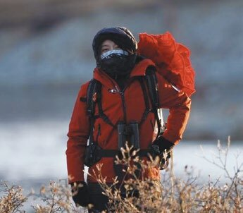
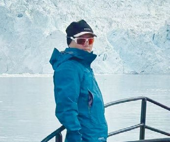

弗兰格尔岛，
是全球北极熊产仔密度最高的栖息地。
每年约 400 只小熊在这里出生。
UNESCO 世界自然遗产，
最后一群猛犸象的避难之地。
更新世以来 · 与大陆隔绝至今。
— 在母熊带崽的礁石之畔，我们驻足整日。
弗兰格尔岛，
是全球北极熊产仔密度最高的栖息地。
每年约 400 只小熊在这里出生。
UNESCO 世界自然遗产，
最后一群猛犸象的避难之地。
更新世以来 · 与大陆隔绝至今。
— 在母熊带崽的礁石之畔，我们驻足整日。
欧亚大陆最东之角 ——
杰日尼奥夫角。
站在角上，
晴日可远望 86 公里外的阿拉斯加海岸。
白令海峡 · 两洲遥相对望。
— 这是真正的「世界尽头」。
米奇金沙嘴，
长 60 公里 · 平均宽仅 100 米。
动物学自然保护区。
数以千计的海象，
从礁石、滩涂、浮冰一一涌上岸。
这是地球上最壮观的群居景观之一。
— 冲锋艇缓缓靠近，呼吸放轻。
伊特格拉恩岛的鲸骨小道 ——
16 世纪前古爱斯基摩人以弓头鲸骨竖立而成的圣地。
已列入俄罗斯文化遗产。
乌埃连村的骨雕作坊，
拉夫连季亚村的传统舞蹈，
白令亚皮筏盛会 ——
原住民坚守至今的文化心脏。
赫罗莫夫教授号 —— 一艘真正的极地科考船。
1974 年下水，加固冰级船体，
先后服役于俄罗斯水文气象总署的极地考察任务，
常年在白令海与北冰洋之间穿行。
退役改装后，仍保留着科考船的工作肌理 ——
船桥的航海图、甲板的吊艇、图书室与讲座厅。
船身坚厚，吃水稳健，可深入浮冰带；
船上配有冲锋艇、桑拿房、专家讲堂。
全船仅 40 席 · 一年一期。

二十余年野外科研足迹遍及青藏高原、帕米尔与北极圈。曾五十余次深入南极、常驻北极三年，持冲锋舟驾驶与急救资质。译著包括《植物大发现》《荒野守望》《寂静的石头》《聆听冰川》等。

2004 至 2006 年驻守南极中山站，从事极光观测、冰芯钻取与野外搜救，获国家海洋局"优秀南极考察队员"。2016 年起专注极地探险，足迹遍及南北极点、格陵兰与斯瓦尔巴。中国极地向导联盟（CPGA）发起人。
13 天 · 自阿纳德尔（俄属）启航
一日一页 · 一程一景
抵达楚科奇行政中心阿纳德尔，登船入住，欢迎酒会，结识探险队员。
船尾甲板偶见白鲸。
登陆伊特格拉恩岛，徒步鲸骨小道——16 世纪前古爱斯基摩人以弓头鲸骨竖立而成的圣地。
下午冲锋艇巡游谢尼亚文海峡，俄罗斯远东最佳观鲸海域，
可见座头鲸、灰鲸与白鲸。
立于欧亚大陆最东之角，徒步至杰日尼奥夫探险家纪念灯塔。
晴日可遥望 86 公里外的阿拉斯加海岸。
抵达乌埃连——欧亚最东定居点、楚科奇骨雕艺术中心，
参观最古老的工坊，品尝鲸肉、海象、鱼子酱等北方风味。
登陆仅 8 平方公里的科柳钦岛——爱斯基摩语意为"大浮冰"，岛形圆若漂流之冰。
1992 年废弃的气象站如今只余荒凉建筑。
岛上是北极最壮观的鸟崖之一，海鸠、海雀、海鸥群栖于崖；
岸边偶见北极熊踪迹。
首次踏上弗兰格尔岛——全球北极熊产仔密度最高之地，
UNESCO 世界自然遗产，最后一群猛犸象的避难所。
冲锋艇巡岸，远观礁石上的母子熊。
弗兰格尔苔原徒步。
岛上唯一原生的大型哺乳动物——麝牛在金黄苔原上悠然觅食；
北极狐与北极兔来去如影。
登陆赫勒尔德岛——地球上最少有人涉足的岛屿之一。
海象群在礁石上栖息，海雀在悬崖上盘旋。
在弗兰格尔母熊产仔之地停留一日。
不登陆，仅静观，长焦镜头记录母子日常。
这是世界上最罕见的极地母性时刻。
冲锋艇沿科柳钦湾崎岖海岸巡游。
可见鲸群、海象栖息地，与无数筑巢的北极海鸟。
白令海峡之滨的拉夫连季亚村，
原住民坚守传统生活的文化心脏，
每年举办"白令亚"传统皮筏盛会。
漫步村落，参观纪念碑与博物馆，聆听楚科奇民族的故事。
可选六小时穿越白令亚国家公园的徒步：
蜿蜒峡湾、绵延丘陵、北极花苔原。
终点在谢尼亚文温泉——普罗维登斯基地区最大地热区，
150 余处温泉涌出地表，水温至 80℃，富含矿物与氡。
抵达长 60 公里、平均宽仅 100 米的米奇金沙嘴——
动物学自然保护区。
海象与海豹栖息岸边，珍稀鸟类筑巢；
冲锋艇近距离观察百里海象巨群。
清晨返航阿纳德尔，告别船员；
依航班安排接送至酒店或机场。
归家后将收到一份礼物——本次航程的纪录片。
2026 · 8月20日 — 9月3日
13 天 · 阿纳德尔 ↔ 阿纳德尔
赫罗莫夫教授号
全船 40 席 · 一年一会
CONTACT
whalebayexpedition@gmail.com